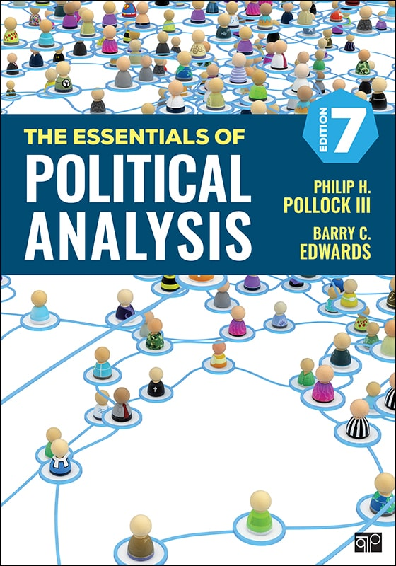

Today’s Agenda
All Scientific Knowledge Begins with Measurement
- Exploring the data in the news
Justin Leinaweaver (Spring 2026)
The answer is in the syllabus

Our goal as political scientists is to generate knowledge about the social world using the scientific method
To create useful measurements you must:
Define the Concept
Specify the Tool
Specify the Process
Test for Robustness
Exploring the Data in the News
What did you find?
How are they using data?
Is the data high enough quality for their conclusions?
Based on all these examples, what do we learn about the use of data in the media to report on current events?
Do the authors explain and defend the quality of the measures?
Do they make it possible for the reader to evaluate the quality of the measures?

Pollock, Philip H and Edwards, Barry C. (2024). The Essentials of Political Analysis. 7th ed. Washington DC: CQ Press.
Assignment for Next Class
Pollock, Philip H and Edwards, Barry C. (2024). The Essentials of Political Analysis. 7th ed. Washington DC: CQ Press.
Read Chapter 1
Submit answers to end of chapter exercises 1, 4 & 7 on Canvas